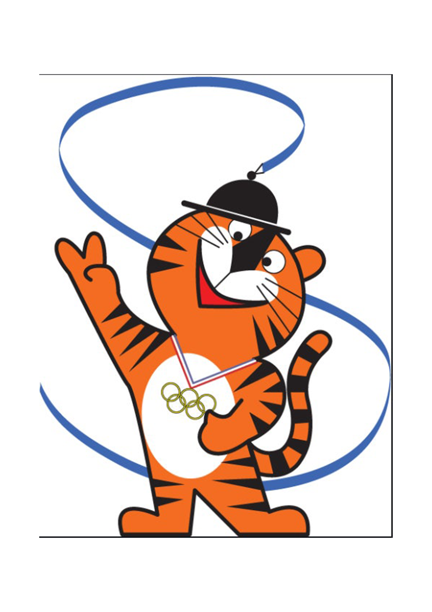

서울올림픽
호돌이 디자인
서울올림픽 마스코트 호돌이에 디자인은 김현 디자이너가 1983년 지명공모에서 선정한 상모 쓴 아기 호랑이 콘셉트를 탄생했으며, 4개의 선과 파랑의 색채가 한국적 정서를 잘 담아내고 있습니다.
상모에서 나타나는 곡선은 한국 전통의 리듬을 상징하며, 호돌이는 친근하고 밝은 이미지를 전달합니다. 머리에 상모를 쓰고 전통 복장을 입고 있는 모습은 한국의 문화와 정체성을 잘 보여줍니다.
호돌이는 서울올림픽의 성공적인 개최를 상징하는 대표적인 캐릭터로, 이후 다양한 응용 그래픽으로 발전하며 올림픽 마스코트 디자인의 새로운 기준을 제시하였습니다.
